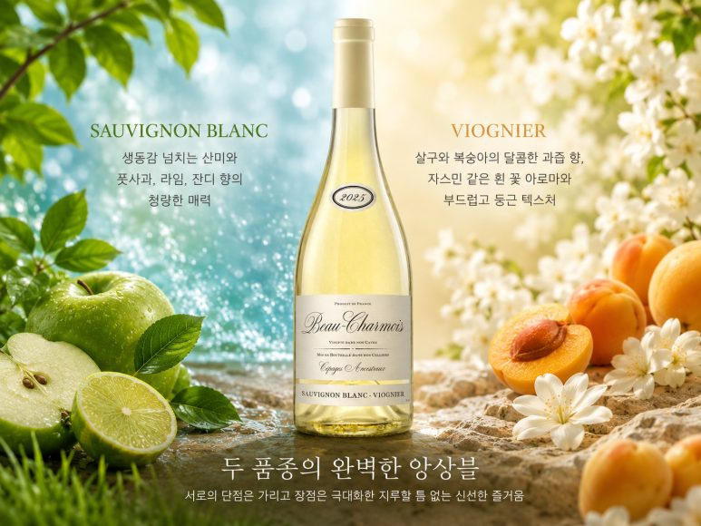
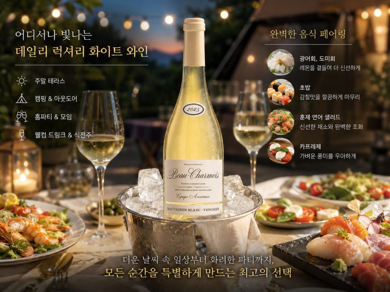

프랑스 남부의 화사한 햇살을 머금은 한 잔, 부 샤르무아 소비뇽블랑-비오니에
무더운 더위가 이어지는 요즘 같은 날씨에는 갈증을 시원하게 해소해 주면서도 코끝을 화사하게 자극하는 매력적인 화이트 와인이 간절하게 생각나곤 하죠. 수많은 와인들 사이에서 진정한 보석을 찾아내기 위해 끊임없이 탐구하는 것이 와인 라이프의 큰 즐거움이 아닐까 싶답니다. 오늘 아주 특별하게 소개해 드릴 와인은, 수많은 와인들이 줄지어 섰던 거대한 시음회 자리에서 단 한 모금만으로 저의 미각을 완전히 사로잡았던 주인공이에요. 바로 프랑스의 숨은 명작, 부 샤르무아 소비뇽블랑-비오니에입니다.
무더운 더위가 이어지는 요즘 같은 날씨에는 갈증을 시원하게 해소해 주면서도 코끝을 화사하게 자극하는 매력적인 화이트 와인이 간절하게 생각나곤 하죠. 수많은 와인들 사이에서 진정한 보석을 찾아내기 위해 끊임없이 탐구하는 것이 와인 라이프의 큰 즐거움이 아닐까 싶답니다. 오늘 아주 특별하게 소개해 드릴 와인은, 수많은 와인들이 줄지어 섰던 거대한 시음회 자리에서 단 한 모금만으로 저의 미각을 완전히 사로잡았던 주인공이에요. 바로 프랑스의 숨은 명작, 부 샤르무아 소비뇽블랑-비오니에입니다.

사실 와인을 큐레이션하다 보면 정말 다양한 와인들을 한자리에서 맛보는 대형 시음회에 참석하게 되는데요. 무려 200종이 훌륭히 넘는 수많은 와인을 하나하나 집중해서 시음하는 치열한 자리였답니다. 내로라하는 명품 와인들 사이에서 코가 마비되고 미각이 둔해질 때쯤, 이 와인을 한 모금 머금는 순간 눈이 번쩍 뜨이는 기분 좋은 충격을 받았어요. 그 수많은 라인업 중에서 딱 하나, 단연 가장 마음에 들었고 뇌리에 강렬하게 꽂혔던 와인이었기에 망설임 없이 여러분께 소개해 드리려고 발 빠르게 가져오게 되었답니다.
PART 1. 소비뇽 블랑과 비오니에의 기막힌 앙상블
부 샤르무아 소비뇽블랑-비오니에가 그토록 수많은 와인들 사이에서 독보적으로 빛날 수 있었던 이유는, 서로 완전히 다른 매력을 가진 두 가지 화이트 품종의 특징과 장점을 정말 조화롭게 잘 담아냈기 때문이에요.
우선 블렌딩의 중심을 잡아주는 소비뇽 블랑(Sauvignon Blanc)은 여름 와인의 대명사답게 입안을 짜릿하게 자극하는 생동감 넘치는 산미와 푸릇푸릇한 풋사과, 라임, 그리고 싱그러운 잔디 향의 청량함을 가득 품고 있답니다. 하지만 산미만 너무 강하면 입안이 쉽게 피로해질 수 있죠. 바로 그 부분을 비오니에(Viognier) 품종이 완벽하게 보완해 준답니다.

비오니에는 화려함의 극치를 달리는 품종으로, 잔을 흔들 때마다 잘 익은 살구와 복숭아의 달콤한 과즙 향, 그리고 이국적인 자스민 같은 흰 꽃 아로마를 화사하게 뿜어내요. 게다가 입안을 부드럽고 둥글게 감싸주는 텍스처와 기분 좋은 볼륨감까지 더해주죠.
청량하고 신선한 산미를 가진 소비뇽 블랑과, 화려한 아로마에 우아한 미감을 지닌 비오니에가 만나 서로의 단점은 완벽하게 가려주고 장점은 극대화하는 기막힌 앙상블을 이뤄냈습니다. 두 품종의 밸런스가 한쪽으로 치우치지 않고 정교하게 맞물려 있어서, 마시는 내내 지루할 틈 없는 신선한 즐거움을 선사한답니다.
PART 2. 테크니컬 데이터
용량 : 750ml
알코올 도수 : 11.5%
국가 및 생산 지역 : 프랑스 > 랑그록 루시용
포도 품종 : 소비뇽 블랑 (Sauvignon Blanc), 비오니에 (Viognier) 블렌딩
부 샤르무아 소비뇽블랑-비오니에의 스타일 지표를 살펴보면 당도는 낮고 아주 깔끔하게 떨어지는 완연한 드라이 화이트 와인 스타일이에요. 인위적인 단맛이 남지 않기 때문에 더운 날씨에 청량하게 즐기기에 최적의 조건을 갖추고 있죠.
바디감은 라이트 미디엄 정도로 입안을 너무 가볍게 흘려보내지 않으면서도, 비오니에 특유의 매끄러운 텍스처 덕분에 기분 좋은 볼륨감을 제대로 느낄 수 있어요.
산도 지표는 소비뇽 블랑의 영향으로 침샘을 아주 기분 좋게 자극하는 신선하고 활기찬 수준을 유지합니다. 혀끝을 찌르는 시큼함이 아니라 화사한 꽃 향과 햇과일의 미네랄리티가 어우러진 세련된 산미이기 때문에, 한 모금 마시는 순간 입안 전체에 깨끗한 활력이 가득 차오르는 것을 경험하실 수 있습니다.
PART 3. 부 샤르무아 소비뇽블랑-비오니에 테이스팅 노트
아주 시원하게 칠링을 마친 부 샤르무아를 깨끗한 화이트 잔에 조심스럽게 채우면, 투명하고 맑은 옅은 볏짚 색 빛깔 사이로 싱그러운 연둣빛 광채가 은은하게 도는 아름다운 모습을 볼 수 있어요. 시각적으로 주는 이 맑고 정결한 컬러감만으로도 무더위를 날려버릴 청량함이 고스란히 전해지죠.
잔을 가볍게 돌려 코끝을 대면 인위적인 향 대신 소비뇽 블랑 특유의 풋풋한 청사과와 쨍한 시트러스, 라임의 아로마가 먼저 기분 좋게 스쳐 지나갑니다. 이어서 뒤따라오는 비오니에의 화사한 존재감이 아주 놀라운데요, 잘 익은 달콤한 복숭아와 살구 향, 그리고 은은한 자스민 꽃 내음이 겹겹이 피어오르며 코끝을 가득 채워요. 싱그러운 풀 내음과 화사한 플로럴 향이 복합적으로 어우러져 한층 더 우아한 인상을 남긴답니다.
입에 가볍게 머금으면 소비뇽 블랑의 생동감 넘치는 산미가 촉촉하게 퍼지며 미각을 깨워주고, 연이어 비오니에의 부드럽고 실키한 감촉이 혀를 매끄럽게 감싸 안아줍니다. 목 넘김 이후에는 산뜻하고 상큼한 시트러스의 여운과 화사한 꽃 향의 잔향이 아주 길게 이어집니다. 텁텁함이나 무거운 느낌이 전혀 없어서 마시는 내내 속이 편안하고 입안이 깨끗하게 리프레시되는 느낌을 제대로 느낄 수 있어요.
PART 4. 이런 날씨에, 이런 음식과 함께해 보세요
부 샤르무아 소비뇽블랑-비오니에의 가장 큰 매력은 더운 날씨 속 일상이나 화려한 파티 자리 어디서나 존재감을 뽐내는 최고의 데일리 럭셔리 화이트 와인이라는 점이에요. 주말 저녁 야외 테라스나 캠핑장, 혹은 에어컨을 시원하게 켠 홈파티 테이블 위에 이 와인을 얼음 바스켓에 꽁꽁 칠링해 두면, 세련되고 모던한 라벨 디자인 덕분에 분위기가 한층 더 화사하게 살아난답니다. 부담 없는 모임이나 스탠딩 파티의 시작을 알리는 웰컴 드링크 식전주로 사용하기에도 정말 이보다 더 좋을 수 없죠.

음식 매칭의 폭 또한 굉장히 넓어서 페어링의 즐거움이 두 배가 됩니다. 두 품종이 가진 섬세한 풍미와 산뜻한 마무리 덕분에 신선한 제철 해산물 요리들과 아주 훌륭한 마리아주를 보여준답니다. 레몬즙을 살짝 곁들인 광어회나 도미회, 감칠맛 나는 초밥은 물론이고 신선한 야채를 곁들인 훈제 연어 샐러드, 가벼운 카프레제와 정말 잘 어울려요.
재미있는 점은 이 와인이 가진 청량한 산미와 화사한 향 덕분에 바삭한 스낵류와도 아주 매력적으로 어우러진다는 거예요. 편안하게 영화를 보며 바삭하고 짭조름한 나초 칩에 치즈 소스나 살사 소스를 듬뿍 찍어 이 와인과 곁들여 보세요. 나초의 짠맛을 와인의 풍부한 복숭아, 살구 향이 부드럽게 감싸 안고, 자칫 느끼해질 수 있는 입안을 소비뇽 블랑의 쨍한 산미가 개운하게 씻어주어 정말 환상의 궁합이랍니다!
200가지가 넘는 쟁쟁한 와인들 사이에서 단연 최고로 꼽히며 제 마음을 단번에 훔쳐 간 부 샤르무아 소비뇽블랑-비오니에와 함께, 이번 주말에는 소중한 분들과 화사한 향기의 정원을 거니는 듯한 특별한 시간을 채워보시는 건 어떨까요? 잔 가득 터지는 싱그러운 산미와 우아한 꽃 향이 여러분의 소중한 시간을 더욱 행복하게 채워줄 거예요.
이 글은 땡큐와인 네이버 블로그에 먼저 올린 글이에요.